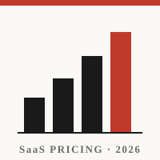

Every SaaS company in 2026 is asking the same two questions: is per-seat pricing dying, and how should we charge for AI? The industry answers with confident statistics — for example, an ICONIQ Capital survey of roughly 300 AI-building software companies, published by BCG, found 68% of vendors charge separately for AI or restrict it to premium tiers.
The trouble is the credible estimates measure different things and don’t agree — Kyle Poyar’s 230-company survey finds 29% use AI credits, a narrower measure, while the ICONIQ/BCG figure is 68% — and the highest numbers come from aggregator pages with no stated method. There was no open dataset to settle it.
So I built one: I collected pricing data from 198 leading SaaS companies directly from their live pricing pages, and used it to answer the questions with evidence instead of citation.
Sampling. 198 recognisable B2B SaaS companies, 18 in each of 11 categories — dev tools, data & analytics, CRM, martech, collaboration, design, security, HR, fintech-ops, support and AI-native — equal numbers per category, so no single segment dominates the totals.
Collection. Each live pricing page was read and converted into 19 structured fields (23 columns in the public dataset): pricing model, tier names, entry price, how AI is charged, where SSO sits. Prices normalised to USD per month. No third-party datasets, no synthetic data.
Recovery. The most valuable pages fight back — Salesforce, OpenAI, Adobe and Canva block scrapers or render prices in JavaScript. Those were recovered with a headless browser, and 14 hard-blocked pages were collected by hand, lifting coverage from 80% to 95%.
Validation. Every headline count was recomputed from the published dataset and matches the analysis pipeline exactly. That confirms the arithmetic, not the accuracy of each coded field, so a separate accuracy audit of a random sample of rows is under way. Every row in the working dataset stores its source URL and a quoted snippet of the page text, so any value can be checked. In October 2026 an audit re-checked every disputed row against archived copies of the August pages; the 111 resulting field corrections are logged with their sources.
From 188 companies with usable pricing data (95% of the sample), across 11 categories.
I built the corrected data into an interactive dashboard. Filter by category or company stage and every chart, headline number and the company table update together.
The headline finding is that the most-cited AI-pricing statistic is far higher than what public pricing pages show. I am not claiming the reports are dishonest — I am claiming three specific things: credible sources disagree (a 230-company survey says 29% use AI credits, ICONIQ/BCG says 68% charge separately or premium-only), the higher figures are not reproducible from public pricing pages, and the gap comes from different definitions, populations and methods. Self-reported “we monetise AI” is a much easier bar than “the pricing page actually charges you more.”
| Source | What it measures | Figure |
|---|---|---|
| Kyle Poyar, Growth Unhinged (self-reported survey, n=230) | Use AI credits | 29% |
| This study (162 pricing pages that mention AI) | Pricing page uses AI credits | 21% |
| ICONIQ Capital (via BCG, 2025; self-reported, AI-building companies) | Charge separately for AI, or restrict it to premium tiers | 68% |
| This study (162 pricing pages that mention AI) | Pricing page charges extra for AI in any form | 42% |
Like for like, public pricing pages show fewer companies using AI credits (21%) than Poyar’s survey reports (29%), and fewer charging extra in any form (42%) than ICONIQ reports (68%). Both surveys are self-reported and sample different companies. Part of the gap is likely AI sold in enterprise contracts that never appears on a public pricing page, so this measures visible pricing only.